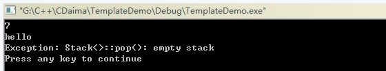

Templates are a tool for C++ to support parametric polymorphism. Using templates, users can declare a general pattern for classes or functions, allowing certain data members in a class or the parameters and return values of member functions to take arbitrary types.
A template is a tool that parameterizes types;
There are usually two forms: function templates and class templates;
Function templates target functions that differ only in parameter types;
Class templates target classes that differ only in the types of data members and member functions.
The purpose of using templates is to allow programmers to write type-independent code. For example, if you write a swap function that exchanges two int variables, this function can only handle int. It cannot handle types such as double or char. To exchange these types, you would need to write another swap function. The purpose of using templates is to make the program implementation type-independent. For example, a swap template function can handle both int and double exchanges. Templates can be applied to functions and classes. They are introduced separately below.
Note:The declaration or definition of a template can only occur in global, namespace, or class scope. That is, it cannot occur in local scope or inside a function; for example, you cannot declare or define a template in the main function.
I. General Form of Function Templates
1. Format of a function template:
template <class 形参名，class 形参名，......> 返回类型 函数名(参数列表)
{
函数体
}
Among them, template and class are keywords. class can be replaced by the keyword typename. Here typename and class make no difference. The parameters inside <> are called template parameters. Template parameters are very similar to function parameters. Template parameters cannot be empty. Once a template function is declared, you can use the names of the template parameters to declare member variables and member functions in the class; that is, wherever built-in types can be used in that function, template parameter names can be used. Template parameters need to be initialized by the template arguments provided when calling the template function. Once the compiler determines the actual template argument type, it is said to have instantiated an instance of the function template. For example, the template form of the swap function is:
template <class T> void swap(T& a, T& b){}，
When such a template function is called, type T is replaced by the type used in the call, for exampleswap(a,b)wherea和b是inttype, and at this point the parameters in the template function swapTwill beintreplaced, and the template function becomesswap(int &a, int &b). And whenswap(c,d)wherec和d是doubletype, the template function will be replaced withswap(double &a, double &b), thus achieving code whose function implementation is type-independent.
2. Note: For function templates, there is noh(int,int)such a call,The type of template parameters cannot be specified in the arguments of a function call. Calls to function templates should useargument deductionto be carried out, that is, only h(2,3)such calls can be made, orint a, b; h(a,b)。
Example demonstrations of function templates will be covered below!
II. General Form of Class Templates
1. The format of a class template is:
template<class 形参名，class 形参名，…> class 类名
{ ... };
Both class templates and function templates start with template followed by a template parameter list. Template parameters cannot be empty. Once a class template is declared, you can use the names of the class template's parameters to declare member variables and member functions in the class. That is, wherever built-in types can be used in the class, template parameter names can be used for declaration. For example
template<class T> class A{public: T a; T b; T hy(T c, T &d);};
In class A, two member variables a and b of type T are declared, and a function hy with return type T and two parameters of type T is also declared.
2. Creating a class template object: For example, a template classA, then the method to create an object using the class template isA<int> m;After the classAfollowed by a<>angle bracket and fill in the corresponding types inside. In this way, the classAwherever template parameters are used in the class will beintreplaced. When a class template has two template parameters, the method to create an object isA<int, double> m;Separate the types with commas.
3. For class templates, the types of template parameters must be explicitly specified in the angle brackets after the class name. For exampleA<2> m;Setting the template parameter tointis wrong (Compile error: error C2079: 'a' uses undefined class 'A<int>'），Class template parameters do not have the issue of argument deduction.That is to say, an integer value cannot be2deduced asinttype and passed to the template parameter. To set the class template parameter tointtype, it must be specified like thisA<int> m。
4. The method for defining member functions outside a class template is:
template<模板形参列表> 函数返回类型 类名<模板形参名>::函数名(参数列表){函数体}，
For example, if class A with two template parameters T1 and T2 contains a void h() function, the syntax for defining this function is:
template<class T1,class T2> void A<T1,T2>::h(){}。
Note:When defining class members outside the class, the template parameters after template must be consistent with the template parameters of the class being defined.
5. Reminder again: The declaration or definition of a template can only occur in global, namespace, or class scope. That is, it cannot occur in local scope or inside a function; for example, it cannot be in themainfunction to declare or define a template.
III. Template Parameters
There are three types of template parameters: type parameters, non-type parameters, and template parameters.
1. Type Parameters
1.1 Type template parameters:A type parameter is composed of the keyword class or typename followed by a specifier, such astemplate<class T> void h(T a){}; whereTis a type parameter. The name of the type parameter is determined by the user himself.A template parameter represents an unknown type.A template type parameter can be used as a type specifier anywhere in the template, exactly the same way as built-in type specifiers or class type specifiers; that is, it can be used to specify return types, variable declarations, etc.
Author's original version:1.2、You cannot specify two different types for the same template type parameter. For example,template<class T>void h(T a, T b){}，the statement callingh(2, 3.2)will cause an error, because the statement specifies, for the same template parameter,Ttwo types. The first argument2specifies template parameter T asint, while the second argument3.2specifies the template parameter asdouble, the two types of parameters are inconsistent, causing an error.(Applies to function templates)
Author's original version: 1.2 is correct for function templates, but it ignores class templates. Below, the situation for class templates will be supplemented.
My supplementary version 1.2 (for class templates):When we declare a class object as:A<int> a, for exampletemplate<class T>T g(T a, T b){}, a call statementa.g(2, 3.2)will not cause an error at compile time, but there will be a warning, because when declaring the class object, it has alreadyTconverted tointtype, while the second argument3.2specifies the template parameter asdouble, at runtime, it will3.2perform a forced type conversion to3. When we declare the object of the class as:A<double> a, at this time there will be no such warning, because fromint到doubleis an automatic type conversion.
Demonstration Example 1:
TemplateDemo.h
Compilation result:
--------------------Configuration: TemplateDemo - Win32 Debug-------------------- Compiling... TemplateDemo.cpp G:\C++\CDaima\TemplateDemo\TemplateDemo.cpp(12) : warning C4244: 'argument' : conversion from 'const double' to 'int', possible loss of data TemplateDemo.obj - 0 error(s), 1 warning(s)
Run result:5
From the test example above, we can see that it is not as rigorous as in the author's original work! This is only my personal test result! Please adopt a practical and truth-seeking attitude and verify it yourself!
2. Non-type Parameters
2.1 Non-type template parameters:A non-type template parameter is a built-in type parameter, such astemplate<class T, int a> class B{};whereint ais a non-type template parameter.
2.2 Non-type parameters are constant values inside the template definition; that is, non-type parameters are constants inside the template.
2.3、 Non-typetemplateparameters can only be integral types, pointers, and references, types such as double, String, and String** are not allowed.Butdouble &，double *，references or pointers to objects are valid.
2.4、 The argument to a non-type template parameter must be a constant expression,that is, it must be computable at compile time.
2.5 Note:Any local object, local variable, address of a local object, or address of a local variable is not a constant expression and cannot be used as an argument for a non-type template parameter.Global pointer types, global variables, and global objects are also not constant expressions and cannot be used as arguments for non-type template parameters.
2.6、 ; A<b> m; that is, array-to-pointer conversion.。
2.7 、sizeofThe result of an expression is a constant expression, and it can also be used as an argument for a non-type template parameter.
2.8. When the template parameter is an integer type, the argument used when calling the template must be of integer type and must be a constant during compilation. For example,template <class T, int a> class A{};If there isint b, then A<int, b> m;will cause an error, becausebb is not a constant. Ifconst int b, then A<int, b> m; is correct, because at this timebb is a constant.
2.9 、Non-type parameters are generally not used in function templates.For example, there is a function templatetemplate<class T, int a> void h(T b){}, if usingh(2)to call it, an error will occur indicating that the argument for the non-type parameter a cannot be deduced. For such a template function, explicit template arguments can be used to solve the problem, such as h<int, 3>(2), which sets the non-type parameter a to the integer 3. Explicit template arguments will be introduced later.
2.10. Allowed conversions between the parameter and argument of non-type template parameters
1. Conversions from array to pointer and from function to pointer are allowed. For example: template <int *a> class A{}; int b
2. Conversion of the const qualifier. For example: template<const int *a> class A{}; int b; A<&b> m; that is, conversion from int * to const int *.
3. Promotion conversion. For example: template<int a> class A{}; const short b=2; A<b> m; that is, promotion conversion from short to int.
4. Integral conversion. For example: template<unsigned int a> class A{}; A<3> m; that is, conversion from int to unsigned int.
5. Usual conversions.
Non-type parameter demonstration example 1:
The user specifies the size of the stack by themselves and implements the related operations of the stack.
TemplateDemo.h
TemplateDemo.cpp

Non-type Parameter Demonstration Example 2:
TemplateDemo01.h
TemplateDemo01.cpp
Run result:-1
TemplateDemo01.cpp
Run result:1
TemplateDemo01.h
TempalteDemo01.cpp
Non-type Parameter Demonstration Example 3:
TemplateDemo02.cpp
Run result:

cout<<max<int>(2.1,2.2)<<endl; //显示指定的模板参数，会将函数函数直接转换为int。
This statement will cause a warning:
--------------------Configuration: TemplateDemo02 - Win32 Debug-------------------- Compiling... TemplateDemo02.cpp G:\C++\CDaima\TemplateDemo02\TemplateDemo02.cpp(11) : warning C4244: 'argument' : conversion from 'const double' to 'const int', possible loss of data G:\C++\CDaima\TemplateDemo02\TemplateDemo02.cpp(11) : warning C4244: 'argument' : conversion from 'const double' to 'const int', possible loss of data TemplateDemo02.obj - 0 error(s), 2 warning(s)
IV. Default Template Type Parameters of Class Templates
1、Default values can be provided for the type parameters of class templates, but default values cannot be provided for the type parameters of function templates.Both function templates and class templates can provide default values for non-type template parameters.
2. The form of default values for class template type parameters is:template<class T1, class T2=int> class A{};for the second template type parameterT2provideinta default value of type ...
3. Default values for class template type parameters are the same as default parameters of functions. If there are multiple type parameters, then all template parameters after the first parameter that has a default value must also have default values. For example,template<class T1=int, class T2>class A{};it is wrong, becauseT1a default value is given for ..., whileT2no default value is set for ...
4. When defining members of a class outside the class template,templatethe parameter list after 'template' should omit the default parameter types. For example,template<class T1, class T2=int> class A{public: void h();}; the definition method istemplate<class T1,class T2> void A<T1,T2>::h(){}。
Define class template type parameters:
Demonstration Example 1:
TemplateDemo.h
TemplateDemo.cpp
Run result:5
Example 1 of Default Template Type Parameters for Class Templates:
TemplateDemo03.h
TemplateDemo03.cpp
Run result:2
When defining members of the class outside the class template, the parameter list after 'template' should omit the default parameter types. If not omitted, it will not cause a compilation error but will issue a warning:
--------------------Configuration: TemplateDemo03 - Win32 Debug-------------------- Compiling... TemplateDemo03.cpp g:\c++\cdaima\templatedemo03\templatedemo03.h(12) : warning C4519: default template arguments are only allowed on a class template; ignored TemplateDemo03.obj - 0 error(s), 1 warning(s)
Original author:Default values for class template type parameters are the same as default parameters of functions. If there are multiple type parameters, then all template parameters after the first parameter that has a default value must also have default values. For example,template<class T1=int, class T2>class A{};it is wrong, becauseT1a default value is given for ..., whileT2no default value is set for ...
Example 2 of Default Template Type Parameters for Class Templates:
TemplateDemo03.h
TemplateDemo03.cpp
Run result:9
TemplateDemo03.h
TemplateDemo03.cpp
Compilation error:
--------------------Configuration: TemplateDemo03 - Win32 Debug-------------------- Compiling... TemplateDemo03.cpp g:\c++\cdaima\templatedemo03\templatedemo03.h(12) : error C2244: 'CeilDemo<T1,T2,T3>::ceil' : unable to resolve function overload g:\c++\cdaima\templatedemo03\templatedemo03.cpp(6) : error C2065: 'cd' : undeclared identifier g:\c++\cdaima\templatedemo03\templatedemo03.cpp(6) : error C2228: left of '.ceil' must have class/struct/union type Error executing cl.exe. TemplateDemo03.obj - 3 error(s), 0 warning(s)
From the above example, we can see that when we try to define T2 and T3 as double types, an error occurs (T1 is defined as int by default). So if we follow the author's statement and set T2 and T3 to the default value double as well, will the error still occur? Look at the following example:
Example 4 of Default Template Type Parameters for Class Templates:
TemplateDemo03.h
TemplateDemo03.cpp
Compilation error:
--------------------Configuration: TemplateDemo03 - Win32 Debug-------------------- Compiling... TemplateDemo03.cpp g:\c++\cdaima\templatedemo03\templatedemo03.h(12) : error C2244: 'CeilDemo<T1,T2,T3>::ceil' : unable to resolve function overload g:\c++\cdaima\templatedemo03\templatedemo03.cpp(6) : error C2065: 'cd' : undeclared identifier g:\c++\cdaima\templatedemo03\templatedemo03.cpp(6) : error C2228: left of '.ceil' must have class/struct/union type Error executing cl.exe. TemplateDemo03.obj - 3 error(s), 0 warning(s)
From the results, we can see that it is the same error as the previous example. From the examples, we can summarize as follows: if a class template has multiple type parameters and default type parameter values are used, they should be placed at the end of the parameter list as much as possible, and the default parameter types must be the same. If the first parameter has a default value set, then all template parameters after it must also be set to default values of the same type as the first parameter.(Declaration: I am also new to C++. The above are just some questions I raised about the original author after demonstrations with examples. My examples may have shortcomings. I hope experts will not hesitate to give advice, so that we can jointly improve this blog and provide a learning platform for novices like me!)
Next, let's verify "default values cannot be provided for type parameters of function templates":
Example 5 of Default Template Type Parameters for Class Templates:
TemplateDemo04.cpp
Compilation error:
--------------------Configuration: TemplateDemo04 - Win32 Debug-------------------- Compiling... TemplateDemo04.cpp g:\c++\cdaima\templatedemo04\templatedemo04.cpp(4) : error C2062: type 'int' unexpected Error executing cl.exe. TemplateDemo04.obj - 1 error(s), 0 warning(s)
Modified TemplateDemo.cpp
TemplateDemo.cpp
Run result:261.1
The original author's demonstration example is as follows:
Example of Non-type Parameters in Class Templates
Original address:
https://www.cnblogs.com/gw811/archive/2012/10/25/2738929.html
http://www.cnblogs.com/gw811/archive/2012/10/25/2736224.html